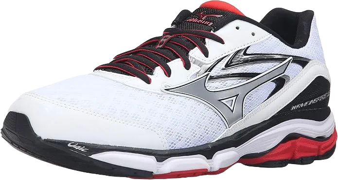
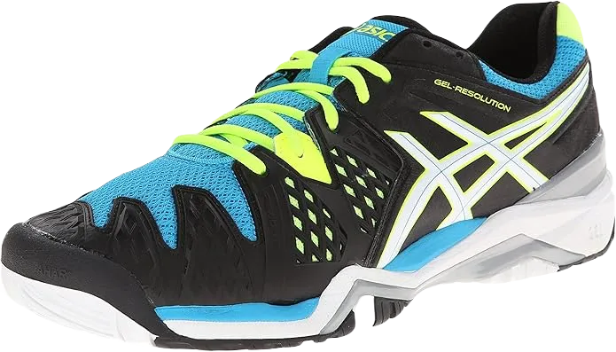

10 Best Shoes for Orangetheory Fitness Programs
If you're a fitness enthusiast, this article is definitely for you. Orange Theory workouts focus on both cardiovascular health and strength training, utilizing a five-zone heart rate-based interval training system.
Is Orange Theory better than a regular workout? The answer is a resounding yes. It delivers maximum results through high-intensity interval training, which promotes the afterburn effect. This means that you can continue to burn calories for up to 36 hours after your workout session. This method is ideal for experienced fitness lovers looking to push their limits. A combination of effective coaching and the right Orange Theory shoes, along with strong determination, can elevate your fitness and health to new heights.
-
#1
Hoka One Cavu
.webp)
Hoka One Cavu tops the list for its exceptional quality and features, produced by a manufacturer renowned for its sports footwear. Specifically designed for Orange Theory workouts, this shoe comes with a warranty, offering peace of mind to buyers. Should any malfunctions arise, you can easily reach out to the company’s customer service for repairs or replacements, and even opt for a full refund. The upper material is breathable, ensuring your feet stay odor-free even after hours of intense exercise.
The shoe features a dual-density midsole and insole, designed to protect your feet from shocks during workouts. Additionally, it includes a well-padded collar for extra comfort and support. Cleaning the shoes is also hassle-free, thanks to the materials used in their construction.
The only downside to the Hoka One Cavu is its weight, which some users may find cumbersome. Despite this, it remains one of the best options available on the market for fitness enthusiasts. -
#2
Mizuno Wave Inspire 12
Next on the list is the remarkable Mizuno Wave Inspire 12, which earns its spot as the second-best choice for Orange Theory workouts due to its 100% flexibility. These shoes provide excellent comfort, enhancing mobility during exercise sessions. Made from fully breathable material, the upper part allows for airflow, ensuring your feet stay dry and sweat-free throughout long workouts. This quality makes them an excellent choice for Orange Theory, where moisture management is crucial. Additionally, they are easy to clean, adding to their appeal.
However, there are some drawbacks to consider with this pair of shoes. They cannot be classified as completely waterproof, leaving room for improvement in that aspect. Additionally, they may not be suitable for individuals with narrow feet, as those with wider feet might find them uncomfortable during workouts.
Another significant downside is the price point; these shoes are relatively expensive. While the cost may give you pause, it’s important to remember that quality often comes at a higher price, making them a worthwhile investment for dedicated fitness enthusiasts. -
#3
Nike Metcon 2 Cross
.webp)
The manufacturing brand is highly regarded in the footwear industry, especially for its quality Orange Theory workout shoes. The company has specifically designed the Metcon 2 Training Shoes to include the essential features needed for effective training sessions.
The shoes feature high-quality laces made from durable cables, providing secure support during workouts. They also incorporate a lightweight cushioning system, a feature not commonly found in many Orange Theory workout shoes. This lightweight design is crucial, as it allows for greater mobility and makes workouts more enjoyable and effective in the gym.
Focusing on the inner sole, the Metcon 2 boasts a dual-density insole that is removable for added convenience. Additionally, these shoes come in various colors, allowing you to choose one that suits your personal style, making you ready for your workout. While this pair comes from a bestselling brand, there is still room for improvement in the overall quality of the shoes. -
#4
Brooks Men’s Ravenna 7
.webp)
Next on the list is the Brooks Ravenna 7, regarded as one of the most classic pairs of Orange Theory workout shoes. This flexible shoe model offers exceptional comfort and a secure fit for its wearer. The lace-up closure system ensures a snug fit, while the inner sole provides maximum protection against shocks during long hours spent in the gym.
Additionally, the Ravenna 7 is equipped with an energy return system, featuring forefoot pads that enhance the overall cushioning and responsiveness. This makes it an excellent choice for anyone looking for reliable performance during workouts.
Finding the perfect size can be a challenge with this brand, so you’re in luck if you manage to secure your ideal fit. Overall, the Brooks Ravenna 7 stands out as a top option for anyone engaged in Orange Theory training. -
#5
Saucony Triumph ISO
.webp)
This pair of Orange Theory shoes is specifically designed for women, making it an excellent choice for those seeking quality workout footwear. Made from 100% synthetic materials, these shoes offer exceptional adjustability and flexibility. The synthetic quality also ensures that the shoes are easy to clean, eliminating worries about maintaining their appearance during workouts.
In just two minutes, you can wipe down your shoes with a wet cloth, or they can be easily cleaned in a washing machine. The upper part of the shoes features 100% mesh, which enhances breathability and ensures professional-level comfort during your workouts.
Additionally, the shoes come with a padded collar that provides an optimal fit, making them a reliable option for anyone engaged in Orange Theory training. -
#6
GEL -Venture 6
The ACICS GEL-VENTURE 6 is a strong contender on our list, designed with a high-quality mesh upper that ensures breathability. This feature keeps your feet comfortable even during extended workouts. The shoe is equipped with a durable rubber sole, providing excellent slip resistance, making it a reliable option for various surfaces.
One of the standout features of this shoe is its dual-density midsole, which is specifically designed to protect your feet from shocks encountered during workouts. This dual midsole not only enhances shock absorption but also adds to the overall comfort of the shoe, making it ideal for both short and long runs.
Additionally, the lightweight construction of the ACICS GEL-VENTURE 6 promotes ease of movement, ensuring that your workouts remain enjoyable and unrestricted. With its combination of comfort and protection, this shoe is a fantastic choice for fitness enthusiasts. -
#7
Brooks Adrenaline GTS 18
.webp)
The BROOKS ADRENALINE GTS 18 stands out as one of the top-selling brands for Orange Theory shoes, both online and in physical stores. Known for its exceptional manufacturing quality, this shoe is crafted from crostile material, which allows for flexibility and unrestricted movement during workouts. It features 100% cushioning to protect your feet from shocks while you're at the gym, ensuring a comfortable experience.
The design includes a high-quality strap that provides a secure fit, preventing any slippage during intense exercises. When it comes to maintenance, these shoes can be easily cleaned by hand with regular soap or tossed in the washing machine for a thorough clean.
However, it's worth noting that the BROOKS ADRENALINE GTS 18 comes at a higher price point, which may deter some buyers. Despite the cost, the quality and comfort make it a worthwhile investment for those seeking reliable workout shoes. -
#8
Asics Gel
.webp)
The ASICS GEL-KAYANO 24 is a standout offering from the renowned ASICS brand, known for its commitment to quality footwear for both gym and sports. This model is one of the most stable options available, making it a reliable choice for those in search of performance. Its upper material is designed for breathability, a crucial feature for gym shoes, ensuring that your feet remain flexible and comfortable during workouts. This pair is suitable for both beginners and experienced athletes alike, and like several other Orange Theory shoes, it can be easily cleaned by hand or in a washing machine.
While the GEL-KAYANO 24 comes at a premium price, the value it offers is enhanced by the manufacturer’s lifetime warranty. This guarantee provides peace of mind, allowing you to pay once and enjoy the benefits without worry. In the event of any issues, you can take advantage of free repairs, replacements, and a money-back guarantee.
One drawback to consider is the limited color options available, which might not cater to everyone's aesthetic preferences. However, the combination of quality, stability, and warranty makes this shoe a worthy investment for serious fitness enthusiasts. -
#9
New Balance Mid626K2
.webp)
Another excellent addition to the list of the best Orange Theory shoes is this model, designed with both comfort and performance in mind. The upper part of the shoe is crafted from soft materials that ensure maximum breathability and flexibility. Made from full-grain leather, this design prioritizes comfort and allows for a natural range of motion in the feet.
The sole is constructed from rubber, providing excellent traction to prevent slipping during workouts or runs. Additionally, it features an IMEVA midsole that offers a soft, cushioned feel for the feet. This lightweight design makes it easy to move and enjoy your exercise sessions without feeling weighed down.
We highly recommend this pair as a great option for those seeking a reasonable yet comfortable choice among Orange Theory shoes. Its combination of quality materials and thoughtful design makes it a standout option for fitness enthusiasts. -
#9
Adidas Ultra Boost
.webp)
Adidas is a well-known brand in the footwear industry, recognized for delivering high-quality products that meet the needs of both men and women. The excellence of their shoes is unquestionable, making this particular pair a top choice for anyone searching for Orange Theory shoes. With a stylish upper design, it’s a great option for those who are style-conscious and want their footwear to look as good as it performs.
Similar to other Orange Theory shoes, this model features a dual-density midsole that provides maximum comfort during workouts. Additionally, it incorporates a knit origin torsion system, designed to keep the feet balanced while exercising or running. This feature is essential for ensuring stability and support throughout various activities.
The sole is crafted from high-quality continental rubber, offering durability, flexibility, and slip resistance. This lightweight rubber construction allows for easy movement, making it an excellent choice for anyone looking to enhance their performance in the gym or during workouts.